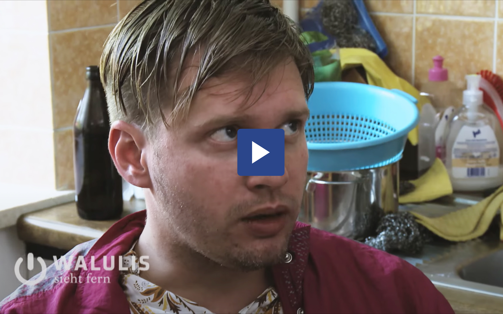

Das Fernsehen als Theater der Wirklichkeit
Was Scripted-Reality ist und was es mit uns macht...
Was ist Scripted-Reality eigentlich?
Mit Scripted Reality beschreibt man ein TV-Genre, bei dem die Dokumentation realer Ergebnisse im Mittelpunkt der Inszenierung steht. Die Szenen werden dabei meist von Laiendarstellern, unter Einhaltung eines zuvor von der Produktionsfirma ausgearbeiteten Scripts, gespielt. Fernsehsender bezeichnen diese Produktionen meist auch nicht als Scripted Reality sonder als Doku-Soap, Reality Soaps oder Pseudo-Reality. Die größte Produktionsfirma, Filmpool, für solche Art von Fernsehformaten bezeichnet diese als Scripted Entertainment, viele im Volksmund auch als Trash-TV.
Auffällig dabei, der Begriff Pseudo Reality ist Strenggenommen ein Oxymoron, eine Zusammenstellung zweier sich widersprechender Begriffe. So etwas wie bittersüß, vegetarische Wurst oder oder helle Nacht.
Auffällig dabei, der Begriff Pseudo Reality ist strenggenommen ein Oxymoron, eine Zusammenstellung zweier sich widersprechender Begriffe. So etwas wie bittersüß, vegetarische Wurst oder oder helle Nacht.
Realität oder Realität?
Die Kameraführung ist meist verwackelt, es gibt abgesetzte Interviews und manchmal werden sogar Nummernschilder oder Personen unkenntlich gemacht, um deren Persönlichkeitsrechte zu schützen. Aber vor wem? Es wirkt fast so, als wolle man uns die erfundene Situation so glaubwürdig verkaufen, dass wir denken, sie sei real. Das diese uns vorgespielten Geschichten
Die Macher von Scripted Reality behaupten, der Zuschauer erkenne, was ihm vorgespielt wird und was echt sei.
„Man sollte den Zuschauer nicht unterschätzen...“
Günter Stampf, erfolgreicher Produzent von: Die Schulermittler
Damit meint er wohl die zuvor für wenige Sekunden klein eingeblendeten Hinweise genügen, um aufzuklären. Fiktion erkennen, ist dabei sinnvoll seinen Kindern beizubringen. In der Alterspanne zwischen 12-17 Jahren sind Kinder und Jugendliche dazu in der Lage, Scripted Reality von der tatsächlichen Wirklichkeit zu unterscheiden. Das hängt natürlich auch stark von der geistigen Kindesentwicklung ab.
Ungeachtet des Alters ist es wichtig, dass Eltern und Kinder diese Sendungen zumindest anfangs gemeinsam schauen und dabei über den Unterschied von Realität und Fiktion sprechen und auch über die Menschenbilder diskutieren, die dort gezeigt werden.
Überschätzte Zuschauer
Wenn wir die Tatsache betrachten, dass Hinweise vor Beginn und nach Ende der Darstellung eingeblendet werden, stellt man sich die Frage: Was ist, wenn wir Zuschauer mitten ins geschehen schalten, zuvor den Hinweis gar nicht erfassen konnten?
Mit einer repräsentativen Umfrage hatte 2017 das Marktforschungsinstitut Ipos im Auftrag für das Fernsehmagazin Panorama (ARD) 100 Zuschauer befragt. Diese erhalten einen Ausschnitt aus der Doku-Soap „Die Schulermittler“, eine Sendung welche auf dem Privatfernsehsender RTL ausgestrahlt wird und diesem im Nachmittagsprogramm zu hohen Einschaltquoten verhilft. Es lohnt sich als auch für die Sender, da durch zwischengeschaltete Werbeblöcke eine Menge Geld verdient werden kann.
Es wurde dabei nicht gekennzeichnet, dass es sich um ein Scripted Reality Format handelt, sonder mitten in den Inhalt geschalten. Im Anschluss wurden jedem Probanden fünf Statements präsentiert, zu denen sie zustimmen oder welche sie ablehnen konnten.
Überraschend, bei dem Statement: „Die gezeigte Handlung ist echt, wurde nicht für die Kamera gespielt“, überwiegt mit 45% keine Zustimmung. Ein Großteil der befragten, glaube das gezeigte Material sei real.
Was sind typische Themen für Doku-Soaps?
Allgemein kann sagen, es soll spannend sein. Die Darstellung sogenannter Stereotypen gehört dabei zum Programm. Es sollen Emotionen transportiert werden, die den Zuschauer erreichen und anziehen weiter zuschauen. Dabei geht es wie zu oft im Fernsehen, um die Quote. Laut eines Ex-Autors von Trash-TV Beiträgen zeiht eines immer: „Fette faule Mütter“. Ebenfalls sagt er: „Mein Arbeitsauftrag: Möglichst assig soll es sein. Wut ist dabei einer der am meisten dargestellten Emotionen, laut und mit viel Geschrei wird der Zuschauer vor dem Fernsehgerät angesprochen
Inhaltlich unterscheiden sich die verschiedenen Sendungen nur geringfügig. Einer der Langzeit-Doku-Soaps von RTL ist „Familien im Brennpunkt“. Hier werden Familien mit Problemen, wie Scheidungsdramen, Sorgerechts-Streitigkeiten, Mobbing oder Streit mit den Eltern gezeigt. Die Familien und Figuren werden dabei in ihrem Alltag von der Kamera begleitet und in zwischengeschalteten Interviews dieser der Sicht zur Situation geschildert. Am Ende einer Folge Familien im Brennpunkt findet sich stets eine Lösung des Problems.
Diese Formate sollen uns zeigen wie es wirklich ist. Inhaltlich wird stark übertrieben, viel ist ausgemalt. Soziale Konfliktsituationen, wie eine Trennung werden auf ein minimum heruntergebrochen. Die Schuldfrage und die im Verlauf der Handlung auftretende Lösung sind dabei scheinbar einfach, gerade für jüngere Zuschauer trügerisch. Kinder und Jugendliche haben dann das Gefühl, hier endlich die Zusammenhänge verstanden zu haben und etwas fürs Leben mitzunehmen.
Was auch sehr oft zieht ist das Motto: Gut, dass es bei mir nicht auch so ist. Viele Jugendliche befinden sich selbst in sozialkritischen Situationen. Familien leiden unter finanziellen Problemen, sind unter Umständen selbst Außenseiter und werden gemobbt oder bemerken die Streitigkeiten zwischen den Eltern, die wohlmöglich zu einer Trennung führen könnten.
Egal, wie schlimm aber auch die Situation auch sein mag, die ausgemalten und oftmals überzogenen Geschichten sind oftmals schlimmer als die eigene Lage. Das gibt dem (jungen) Zuschauern ein gutes Gefühl. Wahrscheinlich sind das unter Umständen die Hauptgründe für die Faszination Scripted Reality.

Wer schaut Doku-Soaps?
Der Großteil der Scripted Reality-Formate wird am Nachmittag ausgestrahlt. Hierzu ein kleiner Auszug am Nachmittagsprogramm vom SAT.1, einem der größten Privatfernsehsender Deutschlands neben RTL.
Auffällig dabei ist, dass SAT.1 bereits ab dem frühen Mittag bis zum Abendprogramm durchweg Scripted Reality Formate ausstrahlt. Bei den öffentlichen rechtlichen, hier im Vergleich der
Wer schaut nun aber eigentlich Doku-Soaps? SAT.1 deckt mit der Sendezeit dieser Formate so gut wie den halben Tag ab, dass sind knapp neun Stunden. In dieser Zeit sind die meisten Deutschen Bürger arbeiten, pendeln nach Hause oder gehen einer Freizeitaktivität nach. Schüler, Hausfrauen oder auch erwerbslose befinden sich zu diesen Sendezeiten zuhause.
„Eine große Zielgruppe sind Hartz-IV-Empfänger und Hausfrauen, die nachmittags bügeln oder so."
Sind sie die Zielgruppe solcher Formate? Tatsächlich, so erzählt es in einem Interview ein Ex-Autor: „Eine große Zielgruppe sind Hartz-IV-Empfänger und Hausfrauen, die nachmittags bügeln oder so." Dabei können sie ja nicht immer auf den Bildschirm gucken, also muss die Geschichte über Worte und vor allem laut erzählt werden“.
(Persönliches Fazit)
Scripted Reality sind eine leichte Kost. Man kann sie nebenbei konsumieren, ohne seine Aufmerksamkeit zu sehr darauf zu lenken. Ebenso aber kann es einem schwer im Magen liegen, wenn man bedenkt, wie viele Deutsche den Unterschied zwischen der erdachten Wirklichkeiten und der eigentlichen Realität nicht erkennen. Doku-Soaps unterhalten uns, gar keine Frage. Sie geben uns unter Umständen ein gutes Gefühl, geben uns ein Gefühl von Überlegenheit. Nur ist das wirklich der Aufgabe der Sender? Und sind wir wirklich in der Lage, uns zu drosseln, kontrolliert und reflektiert einzuschalten und das zu hinterfragen, was uns gerade als Wirklichkeit präsentiert wird?

Lust auf ein Quiz?
Was hast du dir gemerkt und wie gut kennst du dich mit dem Thema aus? Teste deine Wissen mit dem Quiz!